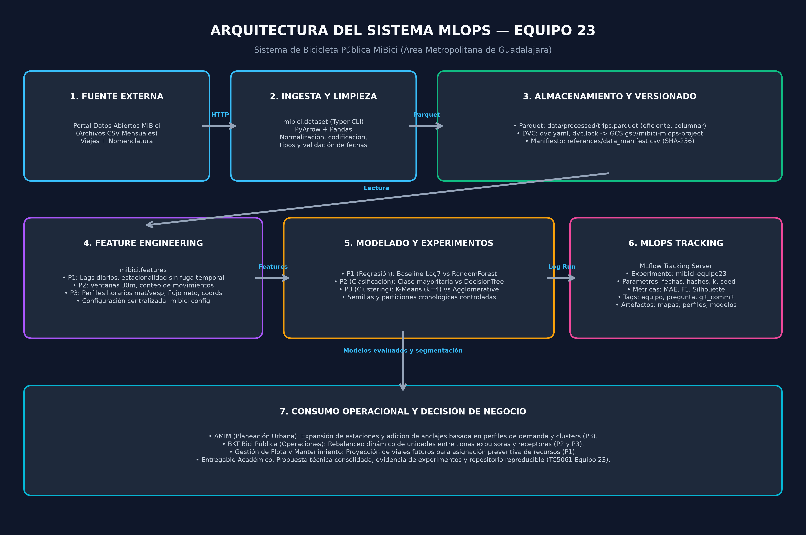
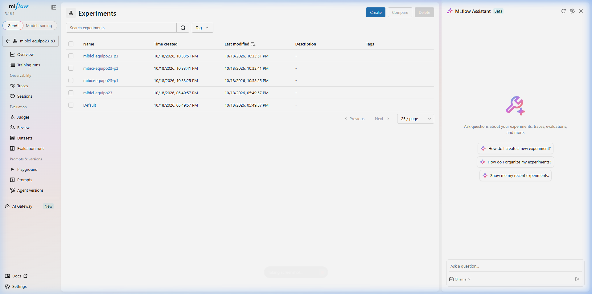
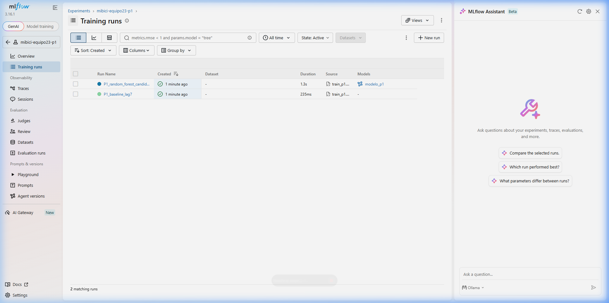
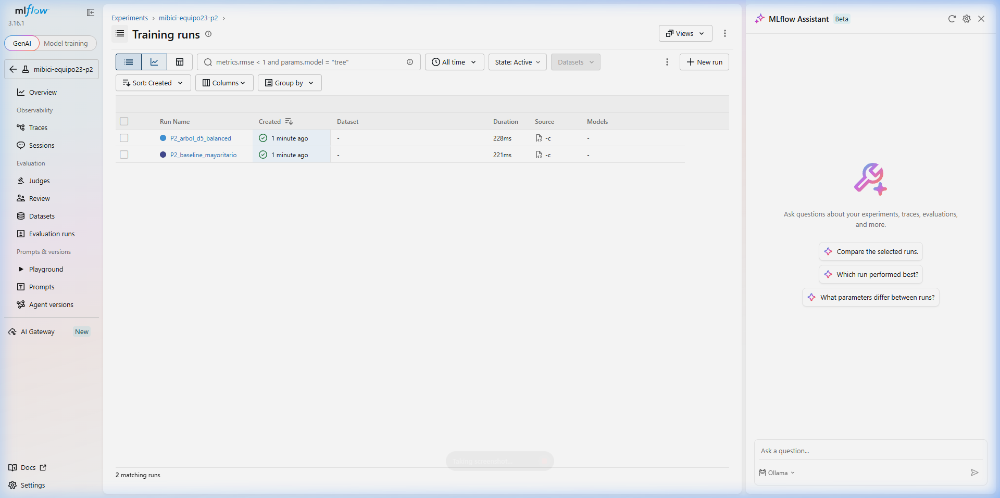
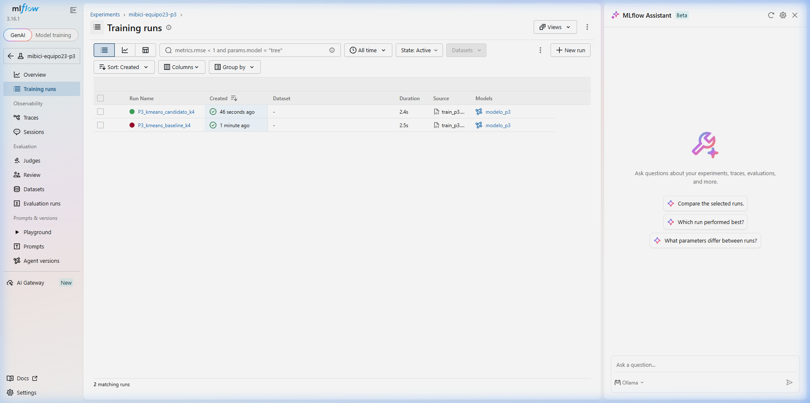
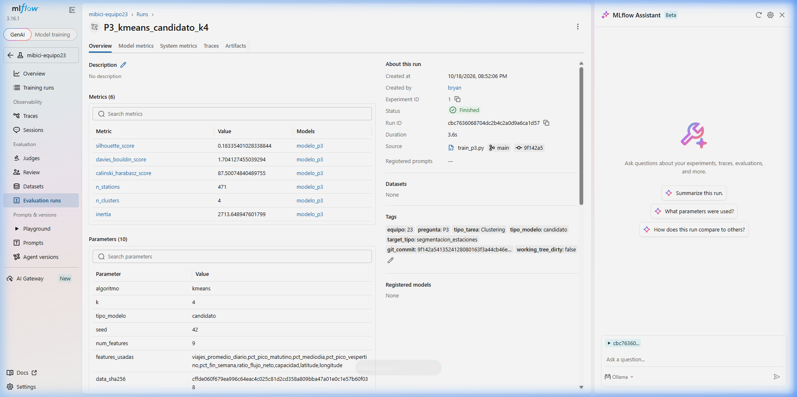
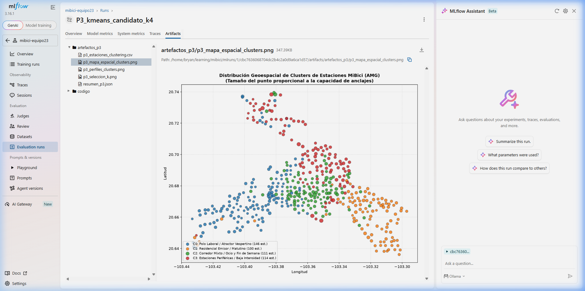
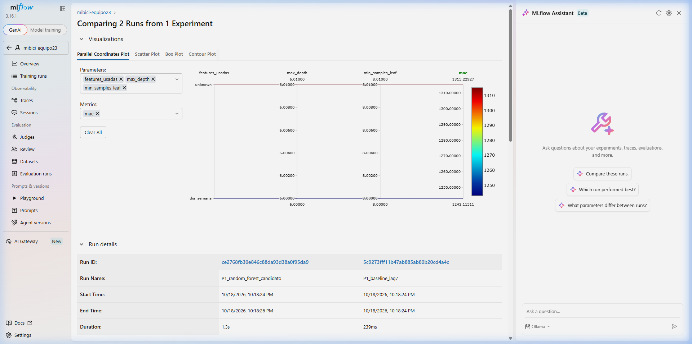

TC5061 — MLOps y Despliegue de Modelos — Equipo 23
Octubre 2026
Enlace al repositorio oficial: https://github.com/bryan-s-ortega/TC5061-Proyecto-Equipo23
El sistema de bicicleta pública del Área Metropolitana de Guadalajara (MiBici) enfrenta tres retos operacionales críticos de asignación de recursos y diseño de red. A continuación se formulan los tres problemas siguiendo el marco del Machine Learning Canvas:
| Dimensión | Pregunta 1 (P1): Demanda Diaria | Pregunta 2 (P2): Riesgo de Desbalance | Pregunta 3 (P3): Segmentación de Estaciones |
|---|---|---|---|
| Tipo de Tarea | Aprendizaje Supervisado (Regresión) | Aprendizaje Supervisado (Clasificación Multiclase) | Aprendizaje No Supervisado (Clustering) |
| ¿Qué se predice o agrupa? | Número total de viajes iniciados por día en la red de MiBici. | Nivel de presión operativa de la estación en el siguiente intervalo: sin presión, presión sin bicicletas (vacía) o presión sin anclajes (llena). | Tipología y perfil funcional de las estaciones físicas según sus patrones horarios, flujo neto y uso semanal. |
| Granularidad | Red completa, agregación diaria (). | Por estación individual, intervalos de 30 minutos (). | Por estación individual, matriz agregada para las 471 estaciones activas. |
| Horizonte | Pronóstico para las siguientes 24 horas (). | Pronóstico para los siguientes 30 minutos (). | Agrupamiento estacional y estratégico (semestral/anual). |
| Relevancia Operativa | Dimensionar la capacidad operativa general, turnos de mecánicos y disponibilidad global de unidades. | Prevenir el colapso operativo por estaciones sin bicicletas disponibles o sin anclajes libres para retorno. | Comprender la estructura funcional urbana del AMG y la complementariedad entre estaciones. |
| Usuario del Resultado | Dirección de Operaciones y Mantenimiento de MiBici. | Supervisores logísticos de balanceo dinámico y conductores de camionetas. | Dirección General de AMIM y Dirección de Planeación Urbana y Transporte. |
| Decisión que se toma | Asignar la flota activa diaria, planear mantenimiento en taller y coordinar guardias de personal. | Despachar camionetas de rebalanceo hacia estaciones críticas antes de que queden bloqueadas. | Diseñar rutas fijas de rebalanceo (pares complementarios) y planificar expansión física de ciclovías y anclajes. |
stations_nomenclature.csv.data/processed/trips.parquet).trip_id, started_at, ended_at,
origin_station_id, destination_station_id,
user_id, gender, birth_year.id, name, latitude,
longitude, dpcapacity.started_at normalizado por día calendario
(viajes), rellenando fechas con calendario continuo para
detectar días sin servicio y rezagos temporales exactos.dpcapacity). Si el
déficit o superávit proyectado supera el umbral del 30% de capacidad, se
clasifica como presión sin bicicletas o presión sin
anclajes.Los datos son publicados bajo licencia de datos abiertos para fines
analíticos y de investigación. Se aplica estricta disociación: los
identificadores de usuario (user_id), género y año de
nacimiento se excluyen de la modelación y no se serializan ni exponen en
ningún punto del pipeline, preservando el secreto estadístico y la
privacidad.
Para evitar la fuga de información temporal (data leakage):
* Se prohíbe el muestreo aleatorio (random split). * Se aplica
partición cronológica estricta: * P1:
80% inicial para entrenamiento cronológico
(
días) y 20% más reciente para prueba
(
días: marzo a septiembre de 2026). * P2: Entrenamiento
hasta enero de 2026, validación de enero a junio de 2026 y prueba
retenida de julio a septiembre de 2026. Todas las características
rezagadas (departures_prev_30m,
arrivals_prev_2h) se calculan estrictamente con eventos
anteriores al inicio de la ventana de predicción.
El pipeline se ejecuta de extremo a extremo sin intervención manual:
mibici.dataset): Proceso CLI
en Typer que descarga directamente los CSV mensuales del portal, valida
codificaciones mixtas (utf-8, latin-1),
normaliza encabezados, castea tipos de fecha y escribe el dataset
consolidado en data/processed/trips.parquet.dvc.yaml y dvc.lock apuntando a Google Cloud
Storage (gs://mibici-mlops-project). Se complementa con references/data_manifest.csv
para auditoría de integridad basada en hashes SHA-256 de cada archivo
fuente.mibici.features): Funciones documentadas y
modulares que generan las matrices temporales y espaciales reutilizables
para P1, P2 y P3.# Ingesta reproducible automática
uv sync
uv run dvc repro --force dataset| Pregunta | Modelo Baseline | Modelo Candidato | Métricas Propuestas | Justificación de las Métricas |
|---|---|---|---|---|
| P1 | Lag 7 (Autorregresivo Semanal): Asume que la demanda de hoy replica la del mismo día de la semana anterior. | RandomForestRegressor: Ensamble de 200 árboles
regularizados (max_depth=6,
min_samples_leaf=8). |
MAE, RMSE, | El MAE refleja directamente el error promedio en número de viajes diarios (interpretable para el operador). El RMSE penaliza grandes desvíos y el mide la varianza explicada. |
| P2 | Regla de Clase Mayoritaria: Predice siempre la clase mayoritaria (sin presión). | DecisionTreeClassifier: Árbol de profundidad 5
balanceado (class_weight='balanced'). |
Accuracy, F1 Macro, Recall | En un problema de desbalance, el Accuracy es engañoso. El F1 Macro equilibra precisión y exhaustividad entre las 3 clases, y el Recall en las clases minoritarias de saturación es vital para no omitir alertas de desbalance. |
| P3 | K-Means Básico (): Agrupamiento basado en 5 variables simples (escala y coordenadas geográficas). | K-Means Enriquecido () y Clustering Aglomerativo: Espacio funcional 9D con dinámicas horarias y balance de flujo. | Silhouette Score, Davies-Bouldin, Calinski-Harabasz | El Silhouette mide compacidad y separación intracluster. Davies-Bouldin (menor es mejor) valida la separación de centroides respecto al diámetro de cluster. Calinski-Harabasz evalúa la dispersión entre clusters. |
La arquitectura desacopla el almacenamiento de datos, el procesamiento de transformaciones y el gobierno de experimentos:

uv.lock.
Reduce los tiempos de instalación de minutos a segundos y garantiza
reproducibilidad idéntica.git_commit) en cada corrida.Resultados obtenidos sobre los conjuntos de prueba cronológicos con datos reales de MiBici:
| Pregunta | Experimento en MLflow | Modelo Evaluado | Métrica Principal | Métrica Secundaria | Conclusión Operativa |
|---|---|---|---|---|---|
| P1 | mibici-equipo23-p1 |
Baseline Lag 7 | MAE: 1,315.2 viajes | RMSE: 1,979.5 (: 0.569) | Captura estacionalidad semanal básica. |
| P1 | mibici-equipo23-p1 |
RandomForest Candidato | MAE: 1,243.1 viajes | RMSE: 1,919.5 (: 0.595) | Supera al baseline: reduce el error medio en más de 72 viajes diarios y mejora el . |
| P2 | mibici-equipo23-p2 |
Baseline Clase Mayoritaria | Accuracy: 0.6244 | F1 Macro: 0.7688 | Incapaz de detectar eventos de saturación crítica. |
| P2 | mibici-equipo23-p2 |
Árbol de Decisión Candidato | Accuracy: 0.8282 | F1 Macro: 0.8499 | Supera al baseline: mejora la exactitud en +20 puntos y permite predecir saturaciones. |
| P3 | mibici-equipo23-p3 |
K-Means Baseline () | Silhouette: 0.2990 | Davies-Bouldin: 1.1685 | Agrupa solo por tamaño y coordenadas espaciales (ciego a dinámicas horarias). |
| P3 | mibici-equipo23-p3 |
K-Means Candidato () | Silhouette: 0.1834 | Davies-Bouldin: 1.7041 | Modelo funcionalmente superior: descubre la asimetría real (polos laborales vs residenciales). |
Se configuraron experimentos independientes por pregunta bajo el
servidor local de MLflow (sqlite:///mlruns.db en el puerto
5001), registrando parámetros, métricas, etiquetas y artefactos:







El proyecto implementa la estructura estandarizada de
Cookiecutter Data Science (ccds) gestionada con
uv. A continuación se presenta el árbol verificado del
repositorio:
TC5061-Proyecto-Equipo23/
├── .gitignore <- Excluye datos, modelos, mlruns y credenciales
├── .pre-commit-config.yaml <- Hooks de calidad de código (ruff-check, ruff-format)
├── LICENSE <- Licencia del proyecto
├── README.md <- Documentación principal y guía de reproducción
├── TC5061_Propuesta_Proyecto_Equipo23.pdf <- Entregable formal consolidado en PDF
├── Taskfile.yml <- Automatización de tareas de desarrollo
├── data/
│ ├── external/ <- Datos de terceros
│ ├── interim/ <- Datos intermedios de transformación
│ ├── processed/ <- trips.parquet versionado con DVC
│ └── raw/ <- stations_nomenclature.csv
├── docs/ <- Documentación técnica complementaria
│ ├── P3_CLUSTERING.md <- Documento de segmentación de estaciones
│ └── README.md
├── dvc.lock <- Bloqueo determinista de artefactos DVC
├── dvc.yaml <- Pipeline de ingesta reproducible
├── mibici/ <- Módulo principal del proyecto en Python
│ ├── __init__.py
│ ├── baseline_p2.py <- Baseline mayoritario de P2 por bloques
│ ├── build_p2_examples.py <- Generación de ejemplos de clasificación
│ ├── build_p2_movements.py <- Agregación de movimientos de estaciones
│ ├── config.py <- Centralización de rutas, semillas y constantes
│ ├── dataset.py <- Pipeline CLI de descarga e ingesta
│ ├── features.py <- Transformaciones y feature engineering
│ ├── modeling/
│ │ ├── __init__.py
│ │ ├── train_p1.py <- Entrenamiento y registro de P1
│ │ ├── train_p2.py <- Entrenamiento de árboles de P2
│ │ └── train_p3.py <- Clustering y registro de P3
│ └── plots.py
├── models/ <- Modelos serializados (excluidos de Git)
├── notebooks/
│ ├── 0_exploracion-datos-mibici.ipynb <- Análisis exploratorio completo de datos
│ ├── mibici_propuesta_base.ipynb <- Prototipos exploratorios iniciales
│ └── preparacion_p1.py <- Extracción de serie diaria
├── pyproject.toml <- Configuración del proyecto y dependencias
├── references/ <- Documentos de soporte y canvas
│ ├── ML Canvas Template.docx
│ ├── arquitectura_sistema.md <- Justificación técnica de la arquitectura
│ ├── data_manifest.csv <- Auditoría criptográfica SHA-256 de archivos
│ ├── diagrama_arquitectura.png <- Diagrama de arquitectura del sistema
│ ├── evidencia_mlflow.md <- Bitácora de registro en MLflow
│ ├── fuentes.md <- Enlaces y fuentes mensuales
│ ├── ml_canvas.md <- Machine Learning Canvas consolidado
│ ├── propuesta_entrega.md <- Fuente de este reporte
│ └── referencias_apa7.md <- Referencias bibliográficas
├── reports/
│ ├── evidence/ <- Capturas oficiales de MLflow y auditoría
│ │ ├── estructura_repositorio.txt <- Árbol plano verificado
│ │ ├── mlflow_artefactos.png <- Vista de artefactos registrados
│ │ ├── mlflow_comparacion_runs.png <- Comparación de corridas
│ │ ├── mlflow_detalle_run.png <- Parámetros, métricas y tags
│ │ ├── mlflow_experimento_p1.png <- Runs del experimento P1
│ │ ├── mlflow_experimento_p2.png <- Runs del experimento P2
│ │ ├── mlflow_experimento_p3.png <- Runs del experimento P3
│ │ └── mlflow_experimentos_lista.png <- Lista general de experimentos
│ └── figures/ <- Gráficas de diagnóstico y mapas
│ ├── p1_errores.png
│ ├── p1_real_vs_predicho.png
│ ├── p3_estaciones_clustering.csv
│ ├── p3_mapa_espacial_clusters.png
│ ├── p3_perfiles_clusters.png
│ ├── p3_seleccion_k.png
│ └── resumen_p3.json
├── tests/ <- Pruebas unitarias automatizadas con pytest
│ ├── test_data.py
│ ├── test_p2_dates.py
│ ├── test_p2_features.py
│ └── test_p3.py
└── uv.lock <- Bloqueo estricto de 272 dependencias